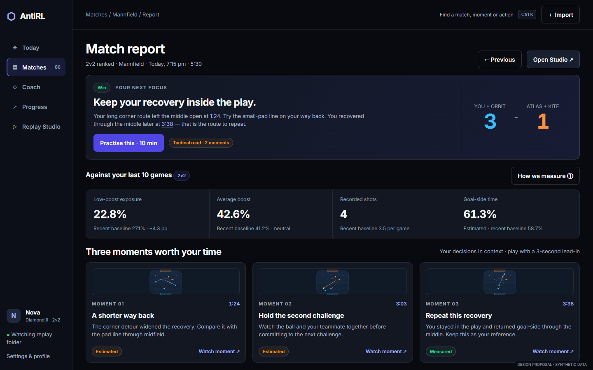
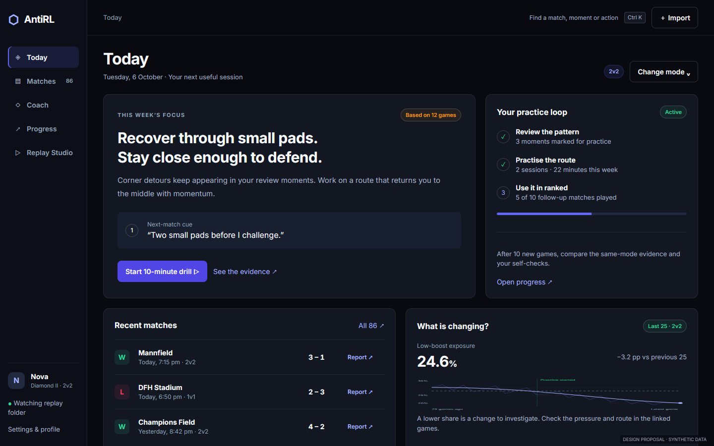
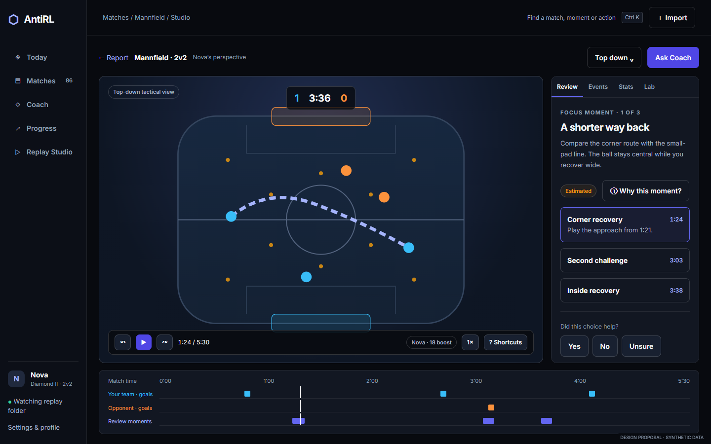
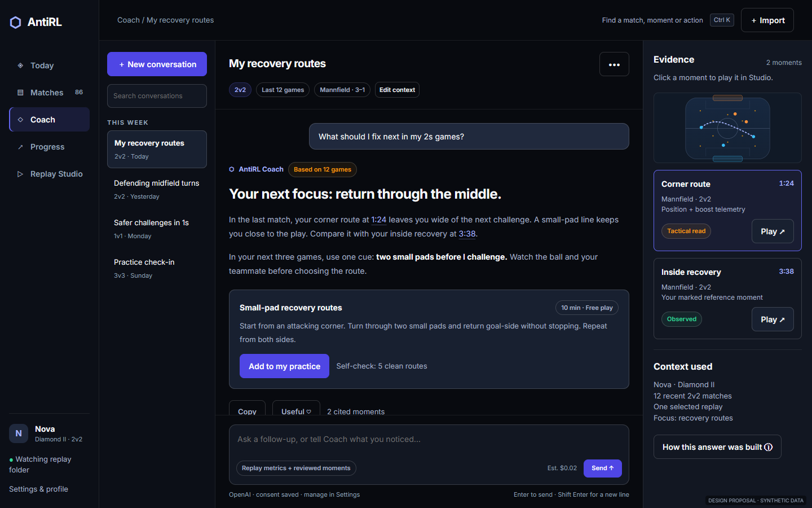
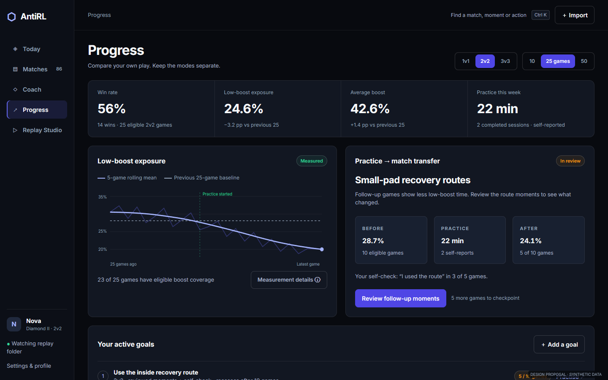
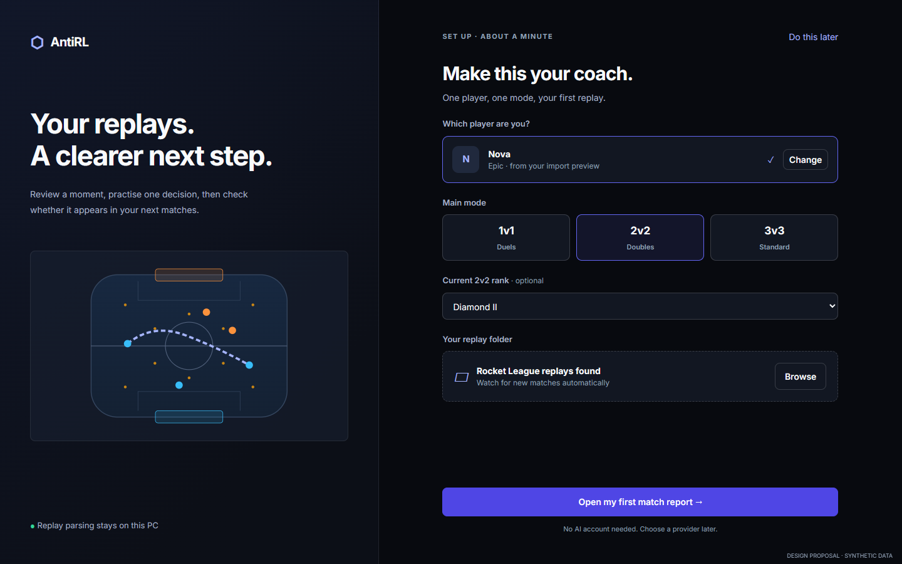

Match Report
One verdict, your own baseline, moments that play, and a practice action.
Open HTML →720p preview186 findings, 109 accounted-for files and all 48 prior lead groups checked. The redesign preserves the navy, indigo and team blue/orange palette. These are six standalone visual specifications, backed by fresh captures of the real React app with synthetic IPC.

One verdict, your own baseline, moments that play, and a practice action.
Open HTML →720p preview
This week's focus, a short drill and a cue to test in the next session.
Open HTML →1080p preview
Timeline-first review, visible transport, minimap and a separate Lab.
Open HTML →720p preview
A readable answer with playable evidence and a composer that stays reachable.
Open HTML →720p preview
Mode-specific analytics, real goals and measured follow-up after practice.
Open HTML →1080p preview
The before-capture manifest includes every page, empty states, streaming chat, deletion, four onboarding steps and startup loading/error at all three requested sizes.
Synthetic data. HTML links demonstrate a proposed flow; static Studio does not play a replay. Mockup dollar estimates are illustrative. No provider call, production implementation, native installer launch or tactical efficacy claim is implied. Embedded mockup fonts include their license notice.